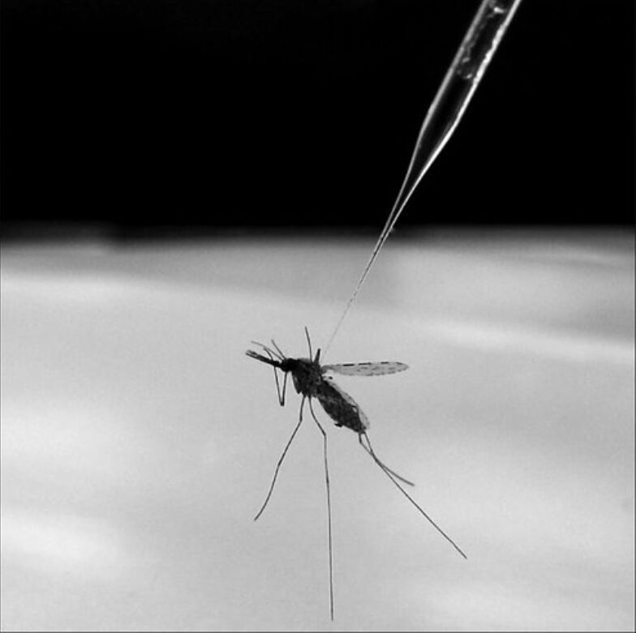
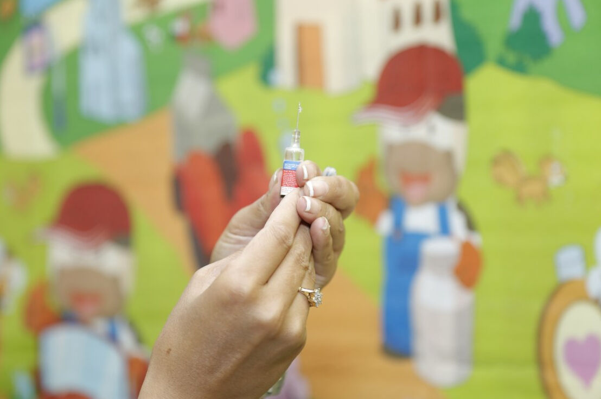

Öğrenen Sürümü
Eğitici Sürümü
Öğrenen Sürümü
Eğitici Sürümü
Modül 5: Yanlış Bilgi Psikolojisi
Modülün Tanımı
Bu Modülün ana amacı, insanları yanlış bilgiye karşı savunmasız hale getiren, yanlış bilginin kalıcılığına neden olan ve düzeltilmesini zorlaştıran bilişsel mekanizmaları ele almaktır.
İkincil amaç ise bu Modülün içeriğini başkalarını eğitmek için kullanmak isteyen eğitmenlere rehberlik etmektir.
Bu amaçlarla modül kapsamında, insanları yanlış bilgilere karşı savunmasız hale getiren, yanlış bilgileri kalıcı hale getiren ve yanlış bilgilerin etkisini önlemek için kullanılabilecek bilişsel mekanizmalarla birlikte konunun nasıl öğretileceğine ilişkin yönergeler sunulmaktadır.
Bu Modülü başarıyla tamamlayanlar şunları yapabilir:
- insanları yanlış bilgilere karşı savunmasız hale getiren bilişsel mekanizmaları anlar ve açıklayabilir
- yanlış bilgiyi kalıcı kılan ve düzeltilmesini zorlaştıran bilişsel mekanizmaları anlar ve açıklayabilir
- yanlış bilginin yayılmasının yanı sıra etkisini de önlemek için kullanılabilecek bilişsel mekanizmaları anlar ve açıklayabilir.
Ek olarak, bu Modülü başarıyla tamamlayan eğitmenler, konuyu nasıl öğreteceklerini anlarlar.
Modülün Yapısı
Bu Modül aşağıdaki bölümlerden oluşur:
- Amaç, İçeriğin Tanımı ve Öğrenme Çıktıları
- Modülün Yapısı
- Öğrenenler için Yönerge
- Eğitmenler için Yönerge (hazırlık, kullanılacak yöntemler ve eğitmenler için ipuçları)
- İçerik (çalışma materyalleri ve alıştırmalar)
- Test
- Kaynakça (yararlanılan kaynaklar ve önerilen kaynaklar ile videolar)
Modülün ana hedefleri, içerik ve öğrenme çıktıları Modülün Tanımı bölümünde açıklanmıştır. Öğrenenler için Yönerge, öğrenenler için yönlendirme ve önerileri içerir. Eğitmenler için Yönerge, eğitimin farklı aşamalarında eğitmenlere rehberlik eder ve konuyu öğretirken faydalı olabilecek ipuçları sağlar. İçerik, tüm çalışma materyallerini ve ilgili alıştırmaları içerir. Test, öğrenenlerin kendilerini ve ilerlemelerini test edebilmeleri için hazırlanmıştır. Genellikle çoktan seçmeli veya doğru/yanlış sorularından oluşur. Kaynakça, yararlanılan kaynaklar ve önerilen kaynaklar şeklinde iki bileşenden oluşur. İçerik hazırlanırken yararlanılan ve atıf yapılan kaynaklar Kaynakça başlığı altında listelenmiştir. Ek Kaynakça, konuyla ilgili daha fazla bilgi edinmek isteyenler için okunması önerilen kaynaklar ve izlenmesi önerilen videoların bir listesinden oluşur.
Öğrenenler için Yönerge
Öğrenenlerden içeriği dikkatle okumaları, önerilen videoları izlemeleri ve alıştırmaları yapmaları beklenmektedir. Daha fazla bilgi gereksinimi duydukları konularda kaynakçalarda listelenen kaynaklara başvurabilirler. İçerik üzerindeki çalışmalarını tamamladıktan sonra, ilerlemelerini değerlendirmek için modül sonundaki testi yapmaları önerilir. Test sonuçlarına göre gerekirse çalışma materyali yeniden gözden geçirilebilir.
Eğitmenler için Yönerge
Eğitmenler için yönerge, insanları yanlış bilgiye karşı savunmasız hale getiren, yanlış bilgiyi kalıcı kılan ve düzeltilmesini zorlaştıran, yanlış bilginin yayılmasını önlemek ve etkisini azaltmak için kullanılabilecek bilişsel mekanizmalar konusunda insanları eğitmek için eğiticilere yönelik bu Modülün içeriğinin nasıl kullanılacağına ilişkin öneriler ve ipuçları içerir.
Hazırlık
Eğitim başlamadan önce görsel materyaller (resim ve video klipler) ve araştırmaya dayalı olgusal bilgilerle zenginleştirilmiş bir sunum (PowerPoint/Prezi/Canva) hazırlanması önerilir. Mevcut veya iyi bilinen yerel örneklerin seçilmesi ve sunulması da önerilir. Örnekler ne kadar tanıdık ve popüler olursa, mesaj o kadar iyi iletilecektir.
Başlarken
Konuya ısındırmak amacıyla başlangıçta Kahoot veya Mentimeter gibi araçlar kullanılarak katılımcılara konuyla ilgili genel ve kısa bazı sorular (3 ile 5 soru) yöneltilebilir. Böyle bir başlangıç katılımcıların konuyla ilgili mevcut bilgi düzeyleri hakkında bilgi sağlayacağı gibi bir motivasyon kaynağı olarak da kullanılabilir.
Kullanılacak Yöntemler
Eğitim sırasında çeşitli öğretim yöntemleri bir arada kullanılabilir:
- Ders anlatma
- Tartışma
- Grup çalışması
- Kendini yansıtma
Eğitmenler için İpuçları
Isınma
Katılımcıları sürece dahil etmenin ve öğrenecekleri şeyler hakkında ortak beklentiler oluşturmanın etkili bir yolu, konuyla ilgili birkaç ön soru sorarak düşünme ve tartışma olanağı yaratmaktır. Bu, grup çalışması ile fikirlerin ve görüşlerin sözlü olarak tartışılması şeklinde yapılabileceği gibi bireysel olarak her katılımcının fikirlerini kağıt üzerine yazması şeklinde de yapılabilir.
Örneğin, katılımcılara yanlış bilginin yayılmasında psikolojik faktörlerin rolü hakkında ne düşündükleri, insanların neden sahte haberlere kandığı, yanlış bilgileri düzeltmenin neden zor olduğu sorulabilir.
Tartışmalardan sonra, katılımcıların insanları yanlış bilgiye karşı savunmasız hale getiren psikolojik mekanizmaları anladığından emin olunmalıdır.
Dersin Amacının Belirtilmesi
Amaç netleştirilmelidir. Bu dersin amacı, insanları yanlış bilgiye karşı savunmasız hale getiren, yanlış bilgiyi kalıcı kılan, düzeltilmesini zorlaştıran ve yanlış bilginin etkisini azaltmak ve yayılmasını önlemek için kullanılabilecek bilişsel mekanizmalar hakkında bilgi vermektir. Isınma sorularının ardından amaç ve hedefleri netleştirmek daha kolay olacaktır.
Ders İçeriğinin Sunulması
İçerik sunulurken katılımcılarla etkileşim içinde olmak ve onları aktif katılım için teşvik etmek önemlidir. Bunun için aşağıda bazı öneriler sunulmuştur:
- İnsanları yanlış bilgilere karşı savunmasız hale getiren bilişsel faktörlere genel bir bakış sunulmadan önce, katılımcılardan bu konu üzerindeki görüşlerini paylaşmaları istenebilir.
- Yanlış bilgiyi kalıcı kılan ve düzeltilmesini zorlaştıran bilişsel faktörlere genel bir bakış sunulmadan önce, katılımcılardan bunun üzerinde görüşlerini paylaşmaları istenebilir.
- Örnek gösterilirken onları kanıtlarla desteklemek (tercihen bilimsel araştırma bulguları ile) önemlidir.
- Yanlış bilginin kabulüyle ilgili bilişsel mekanizmalara ilişkin kapsamlı bir sunum yapıldıktan sonra, katılımcılara yanlış bilgi ile mücadele etmek için de yine bazı bilişsel mekanizmaların kullanılıp kullanılamayacağı sorulabilir.
Bitirirken
Dersin kısa bir özeti yapılarak vermek istenilen en önemli mesajların tekrarlanmasını sağlayacak bir iki soru sorulabilir.
Aşağıdaki soru bu konuda yardımcı olabilir:
- Katılımcılara, yanlış bilginin kabulü ve kalıcılığını etkileyen bilişsel faktörlerin farkında olmanın kontrolü ele almaya yardımcı olup olmayacağı sorulabilir.
Tartışmalardan sonra, katılımcıların yanlış bilginin yayılmasının arkasında çok sayıda bilişsel mekanizma olduğunu anlamaları sağlanmalı, ancak yanlış bilgiye karşı savaşmak için kullanılabilecek başka bilişsel mekanizmalar olduğunun da altı çzilmelidir.
İçerik: Yanlış Bilgi Psikolojisi
Giriş
Günümüzde, bir yandan medya ve internet muazzam miktarda bilgi sağlar ve propagandacılar, vurguncular ve troller gibi çok sayıda kişi/kurum düşüncelerimizi ve duygularımızı kontrol etmek için yarışırken (WikiMedia UK, 2017), diğer yandan, gerçeği kurgudan ayırma sorumluluğu tamamen bireye bırakılmıştır. Bununla birlikte, bireylerin bilimsel bulgular veya siyasi gelişmeler gibi karmaşık konuları anlamak için zamanları, bilişsel kaynakları ve/veya motivasyonları sınırlıdır. Bunun sonucunda yanlış anlamalar yaygındır. Üstelik, yanlış anlama bir kez oluştuktan sonra, onu yok etmek oldukça zordur (Ecker, Lewandowsky, Swire, & Chang, 2011, p. 570). Açık ve güvenilir kaynaklardan yapılan düzeltmelerden sonra bile, yanlış bilgiler insanların muhakemelerini etkilemeye devam etmektedir. Yanlış bilgiye inanma çok ciddi sorunlar doğurabilir. Yanlış bilgi, eğitim, sağlık ve ekonomi gibi farklı alanlarda verilen kararları olumsuz yönde etkileme gücüne sahiptir (Swire-Thompson, & Ecker, 2018, p.2 yayınlanacak).
Yanlış bilgi psikolojisi, insanları doğru olmayan şeylere inanmaya teşvik eden zihinsel kısayollar, kafa karışıklıkları ve yanılsamalarla ilgilidir. İnsanları yanlış bilgiye karşı savunmasız kılan ve düzeltmelerin işe yaramamasına neden olan ise insan psikolojisidir (Shane, 2020c).

"Human brain illustrated with millions of small nerves", Ars Electronica Lisans: CC BY-NC-ND 2.0
İnsanları Yanlış Bilgiye Karşı Savunmasız Hale Getiren Bilişsel Mekanizmalar
İnsanları yanlış bilgiye karşı savunmasız kılan, diğer bir deyişle doğru olmayan şeylere inanmaya iten psikolojik teoriler ve altta yatan bilişsel faktörler burada kısaca tanıtılmaktadır. Bu faktörleri anlamak ve birbirinden ayırmak yanlış bilginin zararlı etkilerini önleyebilmek açısından önemlidir.
Bilişsel Cimrilik veya Entelektüel Tembellik
Entelektüel tembellik veya bilişsel cimrilik, problemleri daha basit yollarla düşünme ve çözme ve zekadan bağımsız olarak karmaşık bilişsel çaba harcamaktan kaçınma, diğer bir deyişle kolayı tercih etme, eğilimidir (Cognitive miser, 2020). Terim, sosyal gerçekliği basitleştirerek bilgi işlemeye harcanan zamandan ve emekten tasarruf sağlayan psikolojik mekanizmaları ifade eder (Cognitive miser, 2021).
Bilişsel cimrilik, insanların beyinlerini verimli kullanmalarına yardımcı olurken, gerektiğinde, örneğin haberlerde gördükleri bir şeyin doğru olup olmadığını düşünürken olduğu gibi, insanların yeterli bilişsel çaba göstermemesine de neden olur (Shane, 2020c).
Yetinmelik Davranış
Kolaycı tatmin diye de adlandırabileceğimiz yetinmelik davranış, ihtiyaçları karşılamak için “yeterince iyi” olan bilgiyi veya bir problem için ilk “kabul edilebilir” çözümü seçmektir (Cooke, 2018). Sınırlı rasyonalitenin (kısıtlı ussallık) bir biçimidir. İnsanları optimal sonuç elde etmek için tüm bilişsel kaynakları kullanmak yerine bağlam için yeterince optimal bir sonuç sağlamaya yetecek kadar kaynak kullanmaya yönlendirir (Metzger & Flanagin, 2013, p. 213).
Yetinmelik davranış, entelektüel tembellik, isteksizlik, aşırı bilgi yüklemesiyle baş edememek, gerekli bilgi değerlendirme becerilerine sahip olmamak gibi çeşitli faktörlerin bir sonucu olabilir. Sebep ne olursa olsun, düşük kaliteli bilginin dolaşımda kalmasına ve yayılmasına katkıda bulunur (Cooke, 2018).
Çift Süreç Teorisi
Bu teori, hızlı düşünme ve yavaş düşünme olmak üzere iki farklı düşünme biçimine sahip olduğumuzu anlatmaktadır. Az çaba gerektiren hızlı düşünme, otomatik, zahmetsiz, çağrışımsal ve duyuşsal temelli bir akıl yürütme biçimidir. Bunun aksine, yavaş düşünme, daha fazla bilişsel çaba gerektiren analitik bir süreçtir (Gronchi & Giovannelli, 2018).
Bilişsel cimrilik eğilimleri nedeniyle, insanlar genellikle yanlış bilgiye inanma riski yaratan hızlı ve otomatik düşünme biçimini kullanırlar. Otomatik süreç, iki nedenden ötürü yanlış bilgi riski yaratmaktadır. Birincisi, bir şeyin işlemesi ne kadar kolaysa, doğru kabul edilmesi olasılığı da o kadar yüksektir. Hızlı ve kolay yargılar, doğru olmadıklarında bile çoğu zaman doğru gibi hissettirir. İkincisi, hızlı düşünme biçimi bazen çok önemli olabilecek ayrıntıların gözden kaçırılmasına neden olabilmektedir. Örneğin, kişi internette okuduğu bir şeyi hatırlayabilir, ancak bunun çürütüldüğünü unutabilir (Shane, 2020c).

"The Thinker", Dano Lisans: CC BY 2.0
Kestirme Yollar (Heuristics)
Kestirme yollar, karar vermenin bilişsel yükünü hafifleten zihinsel kısa yollardır (Heuristic, 2021). İnsanların sorunları hızlı ve verimli bir şekilde çözmesine ve yargıda bulunmasına olanak tanırlar (Cherry, 2021). Araştırmalar, kestirme yolların insanların her gün karşılaştıkları büyük miktarda bilgi ve çok sayıda kararla etkili bir şekilde başa çıkmalarına yardımcı olduğunu kanıtlamaktadır (Metzger & Flanagin, 2013, p. 214).
Kestirme yollar, problem çözmeyi ve karar verme sürecini hızlandırmada yardımcı olsa da, hatalara neden olabilirler. Bilişsel önyargılara, yanlış yargılara ve yanlış kararlara yol açabilirler. Kestirme yollara güvenmek, alternatif çözümleri görmeyi veya yeni fikirler ürütmeyi de güçleştirebilir (Cherry, 2021).
Bilişsel Uyumsuzluk
Bilişsel uyumsuzluk, bir kişinin inançları, fikirleri ve değerleriyle çelişen gerçeklerle karşı karşıya kaldığı durumda duyduğu zihinsel rahatsızlığı tanımlar. Bilişsel Uyumsuzluk Teorisine göre, insanlar içsel psikolojik tutarlılık için çaba sarf eder, uyumsuzluğu artırabilecek durumlardan ve bilgiden aktif olarak kaçınmaya ve uyumsuzluk olduğunda onu azaltmaya çalışırlar (Taddicken & Wolff, 2020, p. 207). Bilişsel uyumsuzluk, insanların uyumsuzluğu azaltmak için güvenilir bilgileri reddetmesine neden olabilmektedir (Shane, 2020c).

"Dissonance", hernanpba Lisans: CC BY-SA 2.0
Doğrulama (Teyit) Yanlılığı
İnsan muhakemesinin sorunlu bir yönü olarak görülebilecek bilişsel önyargılardan biri olan doğrulama yanlılığı, var olan inanç ve beklentileri destekleyen kanıtlar aramayı veya eldeki kanıtları bu yönde yorumlamayı ifade eder (Nickerson, 1998, p.175). Başka bir deyişle, potansiyel olarak çelişkili bilgi içerebilecek çeşitli kaynaklardan bilgi aramanın aksine, kişinin mevcut zihinsel modellerini, ön bilgilerini ve inançlarını doğrulayan bilgileri arama ve bunlara inanma eğilimidir (Cooke, 2018).
Dezenformasyon yayanlar, mevcut inançları güçlendirmek için bu eğilimi kullanabilirler (Shane, 2020c). Çok sayıda ampirik kanıt, doğrulama yanlılığının kapsamlı, güçlü ve birçok kılıkta ortaya çıkabildiğini desteklemektedir. Kanıtlar ayrıca, bir kişi bir konu hakkında bir kez pozisyon aldığında, asıl amacının bu pozisyonu savunmak veya haklı çıkarmak haline geldiğini de göstermektedir. Kanıtlara karşı tavır almadan önce tarafsız olup olmadığına bakılmaksızın, kişi daha sonra oldukça önyargılı hale gelebilmektedir (Nickerson, 1998, p.177).
Güdülenmiş Muhakeme
Güdülenmiş muhakeme, insanların tercih ettikleri bir sonuca varmak için argümanları önyargılı olarak değerlendirdiği bir akıl yürütme biçimidir. İnsanlar, çıkarmak istedikleri sonuçları çıkarmalarına izin veren muhakeme stratejilerini kullanırlar (Motivated Reasoning, n.d.). Başka bir deyişle, insanlar gerçeği belirlemek yerine, inanmak istediklerine inanmak için akıl yürütme becerilerini kullanırlar. Buradaki can alıcı nokta, insanların tembel ya da akıl dışı (irrasyonel) düşünmekten ziyade akılcı (rasyonel) yetilerinin yanlış inançlara yol açabileceği fikridir (Shane, 2020c).
Akıcılık
Akıcılık, bilginin insanlar tarafından ne kadar kolay işlendiğini ifade eder. Bir bilgiye tekrar tekrar maruz kalmak, o bilginin işlenmesindeki öznel kolaylığı artırmaktadır. İşlem akıcılığının artması bilginin doğru olduğuna karar verilmesi olasılığını artırmaktadır (Reber & Unkelbach, 2010, p. 563). Başka bir deyişle, insanların akıcı bir şekilde işleyebildikleri bir şeyin doğru olduğuna inanma olasılıkları daha yüksektir (Shane, 2020c).
İşlem akıcılığının belirleyicilerinden biri tekrardır. “İnsanlar bir ifadeyi tekrar tekrar duyduklarında veya gördüklerinde, bu ifadenin daha önce hiç karşılaşmadıkları yeni ifadelere göre doğru olma ihtimalinin daha yüksek olduğuna inanırlar” (Reber & Unkelbach, 2010, p. 564). Daha önce duyulan şeyler daha kolay işlenir ve bu nedenle inanılma olasılığı daha yüksektir. Tekrarlamak etkiyi artırır. Dolayısıyla bir şey çürütülse bile, çürütme esnasında orijinal iddianın tam tekrarı onu daha tanıdık, akıcı ve inandırıcı hale getirebilir (Shane, 2020c).
Seçici Maruziyet ve Seçici Kaçınma
"Seçici maruz kalma" ve "seçici kaçınma" terimleri, bireyin görüşlerini destekleyen bilgiyi arama ve kendisini zorlayan bilgiden kaçınma davranışını tanımlamak için kullanılır. Sosyal medyada, istenmeyen içerik/kişiler kaldırılarak veya gizlenerek seçici kaçınma kolaylıkla gerçekleştirilebilirken (Malinen, Koivula, Keipi & Koiranen, 2018, p. 351) filtreleme yoluyla seçici maruz kalma gerçekleştirilebilmektedir. Seçici maruz kalma aynı zamanda algoritmik filtreleme ile otomatik olarak da yapılmaktadır (Wardle & Derakhshan, 2017, p. 47).

Seçici maruziyetin nedenlerine dair çok sayıda açıklama vardır. Stroud (2017, p. 3-4) bilişsel uyumsuzluk, güdülenmiş muhakeme, doğrulama yanlılığı, akıcılık ve bilişsel cimriliğin seçici maruziyet ile uyum içinde çalışan bilişsel mekanizmalar olduğunu belirtmektedir.
Çoğulcu Cehalet ve Sahte Fikir Birliği Etkisi
Çoğulcu cehalet, toplumdaki diğer bireylerin ne düşündüğü ve neye inandığı hakkında bir anlayış yoksunluğudur. Bir toplumda bir inancın gerçek yaygınlığı ile o toplumdaki bireylerin düşündüğü yaygınlığı arasında bir farklılık vardır (Lewandowsky, Ecker, Seifers, Schwarz & Cook, 2012, p. 113). Siyasi görüşler söz konusu olduğunda, bu durum bireylerin muhaliflerin az sayıda olsalar bile çoğunlukta oldukları yanılgısına kapılmasına neden olabilmektedir. Bu durum, yanlış bilgilerin çürütülmesiyle (örneğin komplo teorileri) daha da kötüleşebilir, çünkü çürütme eylemi de söz konusu görüşlerin gerçekte olduğundan daha popüler görünmesini sağlayabilir (Shane, 2020c).
Sahte fikir birliği etkisi, çoğulcu cehaletin öteki yüzüdür (Lewandowsky, Ecker, Seifers, Schwarz & Cook, 2012, p. 113). Bu durumda, insanlar görüşlerini paylaşan diğer kişilerin sayısını olduğundan fazla tahmin ederler (Shane, 2020c).
Örnek: Çoğulcu Cehaletin Kapsamı Oldukça Çarpıcı Olabilir
Bir araştırmanın bulguları, katılımcıların Avusturalya Yerlilerine ilişkin görüşleri konusunda toplum desteğini olduğundan fazla tahmin ettiklerini ve özellikle olumsuz görüşlere sahip olanların yanılgı payının yüksek olduğunu göstermiştir (Pedersen, Griffiths, & Watt, 2008). Avusturalyalılardan oluşan örneklemdeki insanların yalnızca %1,8'inin Aborijinlere karşı güçlü olumsuz tutuma sahip olduğu saptanmasına rağmen, güçlü olumsuz tutuma sahip azınlığın tüm Avustralyalıların %69'unun (ve arkadaşlarının %79'unun) kendi uç inançlarını paylaştığı yanılgısını yaşadıkları ortaya çıkmıştır (Pedersen, Griffiths, & Watt, 2008; Lewandowsky, Ecker, Seifers, Schwarz & Cook, 2012).

"Indigenous Australian Aboriginal Dancers", NAPARAZZI Lisans: CC BY-SA 2.0
Üçüncü Şahıs Etkisi
Üçüncü şahıs etkisi, medya mesajlarının ve yanlış bilginin diğer insanlar üzerinde daha büyük etkilere sebep olduğunu varsayma eğilimidir (Salwen & Dupagne, 1999, p. 523). Araştırma bulguları, insanların yanlış bilgileri belirlemede diğerlerine göre kendilerini daha avantajlı değerlendirdiğini göstermektedir. Bu durum bireylerin savunmasızlıklarını hafife alması ve dolayısıyla önlem almaması gibi sonuçlar doğurabilmektedir (Stefanita, Corbu & Buturoiu, 2018, p. 6; Shane, 2020c).
Saçmalık Duyarlılığı
Saçmalık duyarlılığı, insanların gerçekle çok az ilgisi olan bilgilere (örneğin anlamsız klişelere) ne kadar açık olduğuyla ilgili bir kavramdır (Shane, 2020c). Burada söz konusu olan gerçekle çelişen bir yalandan ziyade derin anlamlar taşır gibi görünen ancak gerçek bir anlamı olmayan saçma ifadelerdir (Dolan, 2019). Araştırma bulguları, bu tür saçmalıklara daha açık olan kişilerin sahte haberlerden daha çok etkilendiğini göstermektedir (Pennycook & Rand, 2020).
Saçma Cümle Örneği
"Gizli anlam eşsiz soyut güzelliği dönüştürüyor" (Shane, 2020c).
Yanlış Bilgiyi Kalıcı Hale Getiren ve Düzeltilmesini Etkileyen Bilişsel Mekanizmalar
Yanlış bilgi, önemli konularda hatalı karar alınmasına yol açabilir, genellikle kalıcıdır ve düzeltilmesi zordur. Yanlış bilgiyi çürütmek önemli bir bilimsel ve kamu politikası hedefidir, ancak yanlış bilgiyi düzeltme süreci karmaşıktır ve tam olarak anlaşılmamıştır (Chan, Jones, Jamieson, & Albarracín, 2017, p. 1531).
Bireyler yanlış bilgiye maruz kaldıklarında bunu akıllarından çıkarmak zordur (Shane, 2020b). Araştırma bulguları, bireyler maruz kaldıkları yanlış bilgiyi desteklemek için kendilerince gerekçeler ürettiğinde kalıcılık etkisinin daha güçlü, çürütme etkisinin ise daha zayıf olduğunu göstermektedir (Chan, Jones, Jamieson, & Albarracín, 2017, p. 1531).
Örnekler
Örnek 1: Brezilya'da Zika Virüsü Salgını Hakkında Yaygın Olarak İnanılan Yanlışlar
Salgınlar genellikle insanlar için taşıdıkları riskler ve korunma yöntemleri konusunda yanlış yönlendiren komplo teorileri üremesine sebep olur. Genetiği değiştirilmiş sivrisineklerin Brezilya'da Zika virüsü salgınına neden olduğu söylentisi yanlış bilgidir, bilimsel kanıtlarla desteklenmeyen bir iddiadır (Schipani, 2016). Ancak bir araştırmanın bulguları, Zika hakkındaki komplo teorilerine ve diğer yanlış bilgilere yaygın olarak inanıldığını ve Zika hakkındaki düzeltici bilgilerin insanların asılsız iddialar hakkındaki fikrini değiştirmediğini göstermektedir (Carey, Chi, Flynn, Nyhan & Zeitzoff, 2020, p. 1).

"Mosquito That Causes Malaria", NIAID Lisans: CC BY 2.0
Örnek 2: Otizm ile Çocuk Aşıları Arasında İlişki Olduğu Yönündeki Asılsız İddialara İnananlar Var
Birleşik Krallık'ta, çocukluk döneminde yapılan bir aşı ile otizm arasında bağlantı olduğunu öne süren 1998 tarihli bir araştırma, genel kamuoyunda aşının güvenliğine ilişkin önemli bir korku ve çekince yaratmıştır. Birleşik Krallık Sağlık Bakanlığı, diğer bazı sağlık kuruluşları ve medya bu iddiaların hiçbirinin kanıtlanmadığını bildirmesine rağmen, 2002'de halkın %20 ila %25'i aşı-otizm bağlantısına; %39 ila %53'ü de tartışmanın her iki tarafında da eşit kanıt olduğuna inanmaya devam etmiştir (Lewandowsky, Ecker, Seifers, Schwarz & Cook, 2012). Yanlış bilgiyi çürütme çabalarına rağmen, bu söylenceler aşı oranlarında düşüşe ve aşı ile önlenebilir hastalıklarda yalnızca Birleşik Krallık'ta değil, başka yerlerde de artışa yol açmıştır (Swire-Thompson, & Ecker, 2018; Newport, 2015; Chan, Jones, Jamieson, & Albarracín, 2017; Larson, Cooper, Eskola, Katz & Ratzan, 2011).

Örnek 3: Halkın Dörtte Birinden Fazlasının Obama’nın Vatandaşlığı Hakkında Şüpheleri Var
Amerika Birleşik Devletleri'nde bir grup, ülkenin 44. başkanı olan Barack Obama'nın Amerika Birleşik Devletleri dışında (bazıları babasının memleketi Kenya'da) doğduğunu ve bu nedenle anayasal olarak başkanlık görevi yapmaya uygun olmadığını iddia etmiştir. Başkanın doğum belgesinin bir kopyası ve yerel gazetelerde çıkan doğum ilanları gibi inkar edilemez kanıtlar ortaya konmuş olmasına rağmen, yapılan anketler, halkın dörtte birinden fazlasının bu iddialara inandığını göstermiştir (Travis, 2010; Lewandowsky, Ecker, Seifers, Schwarz & Cook, 2012).
Devam Eden Tesir Etkisi
Yanlış bilgi, düzeltildikten sonra bile insanları etkilemeye devam edebilmektedir. Bu bir bakıma düzeltmelerin/çürütmenin başarısızlığıdır (Shane, 2020b). Çalışmalar, “yanlış bilgiye maruz kalmış insanların inançlarını, ona hiç maruz kalmamış insanların inançlarına benzer bir temele döndürmenin son derece zor olduğunu” göstererek yanlış bilginin yaygın etkilerini belgelemektedir (Lewandowsky, Ecker, Seifers, Schwarz & Cook, 2012, p.114). Düzeltmelerin başarısız olmasının nedeni çürütülse bile yanlış bilginin daha sonra gerçek bir bilgiymiş gibi hatırlanabiliyor olmasıdır. Bu, insanların bilgiyi hatırladığı, ancak düzeltildiğini unuttuğu anlamına gelmektedir (Shane, 2020b).
Zihinsel Modeller
Zihinsel model, olmuş bir şeyi anlamak için kullanılan çerçevedir (Shane, 2020b). Zihinsel modeller üzerine yapılan araştırmalar, etkili bir çürütme mesajının, alıcılarda yeni bir model yaratacak kadar ayrıntılı olması gerektiğini öne sürmektedir. Yeni bir zihinsel model yaratmaya izin vererek yanlış bilginin unutulmasını sağlamak için iyi tartışılmış, ayrıntılı bir çürütme mesajı sunmak gerekli görünmektedir (Chan, Jones, Jamieson, & Albarracín, 2017, p. 1532).
Örneğin, eviniz yanıyorsa ve kırık bir molotof kokteyli görürseniz yangının bir saldırıdan kaynaklandığına dair bir zihinsel model oluşturabilirsiniz. Bir itfaiyeci, yangının molotof kokteylinden kaynaklanmadığını söyler ancak nedeni hakkında yeterli açıklama yapmazsa zihinsel modelinizde bir boşluk oluşur, dolayısıyla ilk yargınıza inanmaya devam edebilirsiniz. Bu da düzeltmelerin, yarattıkları boşluğu alternatif bir nedensel açıklamayla doldurması gerektiği anlamına gelmektedir. Ancak, bunu başarmak, diğer bir deyişle oluşmuş bir zihinsel modeli değiştirmek zordur (Shane, 2020b).
İma Edilen Gerçeklik Etkisi
Bir şeyin düzeltilmediği için doğru görünmesidir (Shane, 2020b). Yanlış bilgiyle mücadele edilirken teyitçilerin tüm haberleri incelemesi, doğrulaması yanlış olarak etiketlemesi mümkün değildir. Sonuç olarak, tüm yanlış bilgilerin yalnızca bir kısmı başarıyla etiketlenir. Bir uyarı etiketinin olmaması aslında iki anlam taşımaktadır. Ya söz konusu haber henüz kontrol edilmemiştir ya da doğrulanmıştır. Araştırmalar, insanların genelde ikinci çıkarımı yaptığını, diğer bir deyişle yanlış olarak etiketlenmemiş haberleri doğru olarak kabul ettiğini göstermektedir (Pennycook, Bear, Collins & Rand, yayınlanacak). Sosyal medya gönderilerinin bazılarında yanlış bilgi uyarısı çıkıp, bazılarında çıkmadığında ima edilen gerçeklik etkisi yaşanmaktadır (Shane, 2020b).
Kusurlu Gerçeklik Etkisi
Kusurlu gerçeklik etkisi, düzeltmelerin insanların diğer gerçek bilgilerden şüphe duymasına neden olmasıdır. Burada risk, düzeltmelerin ve uyarıların insanların medyada okuduklarına karşı genel bir güvensizlik yaratmasıdır (Shane, 2020b). Araştırma bulguları, geriye dönük, yanlış bilgi uyarılarının haberleri lekelediğini ve bireylerin haberlere daha az güvenmelerine yol açtığını kanıtlamaktadır. Bu tür uyarılar şüpheciliğin artmasına sebep olmakta ve bireylerin aslında doğru olan bilgilere de güvenmemelerine neden olmaktadır (Freeze, Baumgartner, Bruno, Gunderson, Olin, Ross & Szafran, 2020).
Tekrar
Tekrar, aşinalığa neden olur ve aşinalık, kabule yol açan güçlü ve ikna edici bir faktördür (Paul & Matthews, 2016, p.4). Tekrar, insanların yanlış bilgiyi kabul etmesini sağlamak için etkili bir tekniktir. Geçmişte bir bilgiyle/görüşle ne kadar sık karşılaşılırsa, bellekte o kadar erişilebilir hale gelir ve tekrar karşılaşıldığında o kadar tanıdık görünür (Weaver, Garcia, Schwarz & Miller, 2007, p. 821). Stray (2017), özellikle kaynak, alıcı tarafından zaten bilinen (arkadaşlar ve aile gibi) biriyse, bir mesajı birden çok kanaldan ve kaynaktan almanın, mesajın algılanan güvenilirliğini artırdığını ifade etmektedir (Stray, 2017; Wardle & Derakhshan, 2017, p. 46).

"Beach Repetition", Vincent_AF Lisans: CC BY-SA 2.0
Aynı görüşün tekrarının, insanları, tüm tekrarlar aynı ve tek kaynaktan gelse bile, görüşün geniş çapta paylaşıldığı gibi yanlış bir sonuca götürdüğüne dair kanıtlar da vardır (Weaver, Garcia, Schwarz & Miller, 2007, p. 822).
Yanıltıcı Gerçeklik Etkisi
Yanıltıcı gerçeklik etkisi, aşinalık (önceden maruz kalma) yoluyla doğru olmayan bir şeyin doğuymuş gibi görünmesidir (Shane, 2020b). Kanıtlar, tek bir maruz kalmanın bile sonraki doğruluk algılarını artırdığını göstermektedir. Üstelik, sahte haber başlıkları söz konusu olduğunda “yanıltıcı gerçeklik etkisi” haberin düşük inanılırlık düzeyine veya okuyucunun dünya görüşleriyle tutarsız olmasına rağmen ortaya çıkabilmektedir (Pennycook, Cannon & Rand, 2018).
Geri Tepme Etkisi
Geri tepme etkisi, bir düzeltmenin yanlış bilgiye olan inancı güçlendirebileceği teorisidir (Shane, 2020b). Bunun arkasındaki fikir, bir iddia birilerinin inançlarıyla örtüştüğünde, onlara bunun yanlış olduğunu söylemenin aslında onları buna daha da güçlü bir şekilde inandıracağıdır (Sippit, 2019). Yanlış bilgilendirmede en çok tartışılan psikolojik kavramdır (Shane, 2020b). Bir anlamda haber teyitlerinin etkisiz, hatta verimsiz olduğunu iddia etmektedir. Literatürde geri tepme etkilerinin var olup olmadığı konusunda bir tartışma vardır. İlgili literatürdeki çalışmalar, geri tepme etkisinin aslında nadir olduğunu ve teyit çalışmalarının insanları bilgilendirmeye yardımcı olduğunu göstermektedir (Sippit, 2019).
Kavram, aşırı geri tepme etkisi, dünya görüşü geri tepme etkisi ve aşinalık geri tepme etkisi gibi alt kavramlara ayrılmaktadır. Aşırı geri tepme etkisi, yanlış bilginin aşırı karmaşık düzeltmeden daha inandırıcı olduğu zamandır. Bu durum, düzeltmenin geri tepmesine ve yanlış bilgiye olan inancın artmasına neden olur (Shane, 2020b). Dünya görüşü geri tepme etkisinde, kişi, dünya görüşüyle bağdaşmadığı için düzeltmeyi reddeder ve böyle yaparak inancını güçlendirir (Swire-Thompson, DeGutis & Lazer, 2020; Shane, 2020b). Aşinalık geri tepme etkisi ise düzeltme içinde yanlış bilgi tekrarlandığında ortaya çıkmaktadır (Swire-Thompson, DeGutis & Lazer, 2020). Aşinalık geri tepme etkisi, yanlışlıkları tekrarlayarak düzeltme yapmanın yanlışları daha tanıdık ve dolayısıyla daha inandırıcı hale getirdiği görüşünü savunmaktadır (Shane, 2020b).
Yanlış Bilginin Etkisini ve Yayılmasını Önlemek için Kullanılacak Bilişsel Mekanizmalar
Bu bölümde, yanlış bilgilendirmeyi önleme ve buna karşı zihinsel dayanıklılık oluşturma ile ilgili psikolojik kavramlar ele alınmaktadır.
Şüphecilik
Şüphecilik, manipülasyon olasılığının farkında olma ve gerçeği doğru bir şekilde anlama arzusudur (Shane, 2020a). Şüphecilikte, bilginin (hem yanlış bilginin hem de düzeltmenin) değerlendirilmesine daha fazla bilişsel kaynak harcandığından, yanlış bilginin etkileri azaltılabilir. Kişinin dünya görüşüyle uyumlu olsa bile şüpheyi sürdürme, kanıtları sorgulama ve orijinal verileri inceleme yeteneği yanlış bilgiden korunmaya yardımcı olur, ancak bu zor bir iştir (Swire-Thompson, & Ecker, 2018).
Tetikte Olmak
Tetikte olmak, yanlış bilginin etkilerine ilişkin yüksek bir farkındalık sahibi olmaktır (Shane, 2020a). Araştırma sonuçları, devam eden tesir etkisi gibi yanlış bilginin etkilerine karşı insanları uyarmanın, onları daha tetikte, daha uyanık hale getirebileceğini ortaya koymaktadır. Yanlış bilgilere karşı tetikte olmak yanlış bilgiden gelecek etkileri azaltabilmektedir (Ecker, Lewandowsky & Tang, 2010, p. 1094).
Analitik Düşünme
Kafa yorma, üzerinde düşünme olarak da bilinen analitik düşünme, hızlı, sezgisel yargılardan ziyade akıl yürütmeye dayalı bir değerlendirmeyi içeren bilişsel bir süreçtir (Shane, 2020a). Araştırmacılar, analitik düşünmenin haber başlıkları bağlamında gerçeği ortaya çıkarmaya yardımcı olduğunu saptamıştır (Bago, Rand & Pennycook, 2020, p.2; Shane, 2020a).
Direnç
Direnç, akıcılığın tam tersidir. Bir şeyin işlenmesi veya gerçekleştirilmesi zor olduğunda ortaya çıkar (Shane, 2020a). Araştırma sonuçları, paylaşımdan önce direnç geliştirmenin (bir anlamda düşünmek için duraklamanın) sosyal medyada paylaşılan bilgilerin kalitesini artıracağını ve yanlış bilgilerin yayılımını azaltacağını göstermektedir (Fazio, 2020, p.1). Paylaşma eyleminde direnç geliştirme, yanlış bilgi yayma olasılığını düşürmektedir (Fazio, 2020, p.2).
Aşılama
Yanlış bilgi işlendikten sonra düzeltilmesiyle ilgili zorluklar göz önüne alındığında, alternatif bir yaklaşım, yanlış bilgiyi kodlanmadan önce etkisiz hale getirmektir, aşılama veya önceden çürütme tekniği olarak da bilinir (Cook, Lewandowsky & Ecker, 2017, p.4).
Aşılama yanlış bilgilere karşı önleyici direnç oluşturan teknikleri ifade eder. Tıpkı aşıda olduğu gibi bu yöntemde de insanlar, ileride yanlış bilgileri tanımaları ve reddetmelerine yardımcı olmak için yanlış bilgi örnekleri veya yanlış bilgi tekniklerine maruz bırakılır (Shane, 2020a). Aşılamanın komplo teorilerine olan inancı azaltmada, bilimsel bulgulara olan inancı artırmada etkili olduğu tespit edilmiştir (Cook, Lewandowsky & Ecker, 2017, p.4).
Dürtmeler
Dürtmeler, belli etmeden davranış öneren küçük ipuçlarıdır. Kavram davranış biliminden ortaya çıkmıştır (Shane, 2020a). Yanlış bilgilere karşı direnç oluşturmaya gelince, dürtmeler genellikle analitik düşünceyi harekete geçirmeye çalışır. Yakın zamanda yapılan bir araştırmaya göre insanları, yanlış bilgi paylaşmadan önce bunun doğruluğu hakkında düşünmeleri için dürtmek, bilginin doğru olup olmadığını ayırt etme yetilerini önemli ölçüde artırmaktadır (Pennycook, McPhetres, Zhang, Lu, & Rand, 2020).
Alıştırma
Test
Kaynakça
Bago, B., Rand, D. G., & Pennycook, G. (2020). Fake news, fast and slow: Deliberation reduces belief in false (but not true) news headlines. Journal of Experimental Psychology: General.
Carey, J.M., Chi, V., Flynn, D.J., Nyhan, B. & Zeitzoff, T. (2020). The effects of corrective information about disease epidemics and outbreaks: Evidence from Zika and yellow fever in Brazil. Science Advances, 6(5), eaaw7449. DOI: 10.1126/sciadv.aaw7449.
Chan, M. S., Jones, C. R., Jamieson, K. H. & Albarracín, D. (2017). Debunking: A meta-analysis of the psychological efficacy of messages countering misinformation. Psychological Science, 28(11), 1531–1546.
Cherry, K. (2021). Heuristics and cognitive biases. Verywellmind.
Cognitive miser (2020). Wikipedia.
Cognitive miser (2021). Oxford Reference. Oxford University Press.
Cook, J., Lewandowsky, S. & Ecker, U.K.H. (2017). Neutralizing misinformation through inoculation: Exposing misleading argumentation techniques reduces their influence. PLOS ONE, 12(5), e0175799.
Cooke, N. (2018). Fake news and alternative facts: Information literacy in a post-truth era. ALA.
Dolan, E. W. (2019). Swedish study: Bullshit receptivity is robustly linked to social conservatism — and support for the Green Party. PsyPost.
Ecker, U., Lewandowsky, S., Swire, B., & Chang, D. (2011). Correcting false information in memory: Manipulating the strength of misinformation encoding and its retraction. Psychonomic Bulletin & Review, 18, 570–578.
Ecker, U., Lewandowsky, S., & Tang, D. T. W. (2010). Explicit warnings reduce but do not eliminate the continued influence of misinformation. Memory and Cognition, 38(8), 1087-1100.
Fazio, L. (2020). Pausing to consider why a headline is true or false can help reduce the sharing of false news. Harvard Kennedy School Misinformation Review. 10.37016/mr-2020-009.
Freeze, M., Baumgartner, M., Bruno, P., Gunderson, J., Olin, J., Ross, M. & Szafran, J. (2020). Fake claims of fake news: Political misinformation, warnings, and the tainted truth effect. Political Behavior. 10.1007/s11109-020-09597-3.
Gronchi, G. & Giovannelli, F. (2018). Dual process theory of thought and default mode network: A possible neural foundation of fast thinking. Frontiers in Psychology, 9, 1237. doi: 10.3389/fpsyg.2018.01237.
Heuristic (2021). Wikipedia.
Larson, H. J., Cooper, L. Z., Eskola, J., Katz, S. L., & Ratzan, S. C. (2011). Addressing the vaccine confidence gap. The Lancet, 378, 526–535.
Lewandowsky, S., Ecker, U.K.H., Seifers, C. M., Schwarz, N. & Cook, J. (2012). Misinformation and its correction: Continued influence and successful debiasing. Psychological Science in the Public Interest, 13 (3), 106–131.
Malinen, S., Koivula, A., Keipi, T. & Koiranen, I. (2018). Exploring selective exposure and selective avoidance behavior in social media. SMSociety '18, July 18–20, 2018, Copenhagen, Denmark.
Metzger, M. J. & Flanagin, A. J. (2013). Credibility and trust of information in online environments: The use of cognitive heuristics. Journal of Pragmatics, 59, 210-220.
Motivated Reasoning. (n.d.). Psychology Research and Reference.
Newport, F. (2013). Americans still think Iraq had weapons of mass destruction before the war. Gallup News Service.
Newport, F. (2015). In U.S., percentage saying vaccines are vital dips slightly.
Nickerson, R. (1998). Confirmation bias: A ubiquitous phenomenon in many guises. Review of General Psychology, 2(2), 175–220.
Paul, C. & Matthews, M. (2016). The Russian “firehose of falsehood” propaganda model: Why it might work and options to counter it.
Pedersen, A., Griffiths, B., & Watt, S. E. (2008). Attitudes toward out-groups and the perception of consensus: All feet do not wear one shoe. Journal of Community & Applied Social Psychology, 18(6), 543–557.
Pennycook, G., Bear, A., Collins, E. T. & Rand, D. G. (in press). The implied truth effect: Attaching warnings to a subset of fake news headlines increases perceived accuracy of headlines without warning. Management Science.
Pennycook, G., Cannon, T. D., & Rand, D. G. (2018). Prior exposure increases perceived accuracy of fake news. Journal of Experimental Psychology: General, 147(12), 1865-1880. DOI: 10.1037/xge0000465.
Pennycook, G., McPhetres, J., Zhang, Y., Lu, J. G. & Rand, D. G. (2020). Fighting COVID-19 misinformation on social media: Experimental evidence for a scalable accuracy nudge intervention. Psychological Science, 31(7) 770–780
Pennycook, G. & Rand, D. (2020). Who falls for fake news? The roles of bullshit receptivity, overclaiming, familiarity, and analytic thinking”. Journal of Personality, 88, 185-200.
Reber, R. & Unkelbach, C. (2010). The Epistemic status of processing fluency as source for judgments of truth”. Review of Philosophy and Psychology, 1 (4), 563–581.
Salwen, M.B. & Dupagne, M. (1999). The third-person effect: Perceptions of the media’s influence and immoral consequences. Communication Research, 26(5), 523-549.
Schipani, V. (2016). GMOs didn’t cause the Zika outbreak.
Shane, T. (2020a). The psychology of misinformation: How to prevent it. First Draft.
Shane, T. (2020b). The psychology of misinformation: Why it’s so hard to correct. First Draft.
Shane, T. (2020c). The psychology of misinformation: Why we’re vulnerable. First Draft.
Sippit, A. (2019). The backfire https://fullfact.org/blog/2019/mar/does-backfire-effect-exist/ effect: Does it exist? And does it matter for factcheckers? Full Fact.
Stefanita, O., Corbu, N. & Buturoiu, R. (2018). Fake news and the third-person effect: They are more influenced than me and you. Journal of Media Research, 11( 3), 5-23.
Stray, J. (Feb 27, 2017), Defense Against the Dark Arts: Networked Propaganda and Counter-Propaganda, Tow Center for Digital Journalism, Medium.
Stroud, N. J. (2017). Selective exposure theories. In: K. Kenski & K. H. Jamieson (Eds.). The Oxford Handbook of Political Communication.
Swire-Thompson, B. & DeGutis, J. & Lazer, D. (2020). Searching for the Backfire Effect: Measurement and Design Considerations. Journal of Applied Research in Memory and Cognition. 9. 10.1016/j.jarmac.2020.06.006.
Swire-Thompson, B. & Ecker, U. (2018). Misinformation and its correction: Cognitive mechanisms and recommendations for mass communication. In B. G. Southwell, E. A. Thorson & L. Sheble (Eds.) Misinformation and Mass Audiences. University of Texas Press.
Taddicken, M. & Wolff, L. (2020). Fake news’ in science communication: Emotions and strategies of coping with dissonance online. Media and Communication, 8 (1), 206–217.
Travis, S. (2010). CNN poll: Quarter doubt Obama was born in U.S.
Wardle, C. & Derakhshan (2017). Information disorder: Toward an interdisciplinary framework for research and policymaking. The Council of Europe.
Weaver, K., Garcia, S. M., Schwarz, N. & Miller, D. T. (2007). Inferring the popularity of an opinion from its familiarity: A repetitive voice can sound like a chorus. Journal of Personality and Social Psychology, 92 (5), 821–833.
WikiMedia UK (2017). Evidence provided to the UK parliamentary inquiry on fake news.
Önerilen Kaynaklar
Shane, T. (2020a). The psychology of misinformation: How to prevent it. First Draft.
Shane, T. (2020b). The psychology of misinformation: Why it’s so hard to correct. First Draft.
Shane, T. (2020c). The psychology of misinformation: Why we’re vulnerable. First Draft.
Önerilen Videolar
Shane, T. (2020). The psychology of misinformation: Webinar.